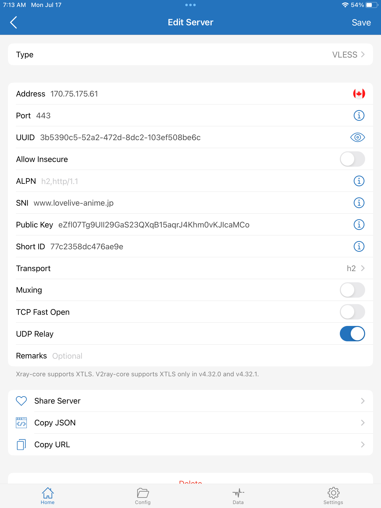
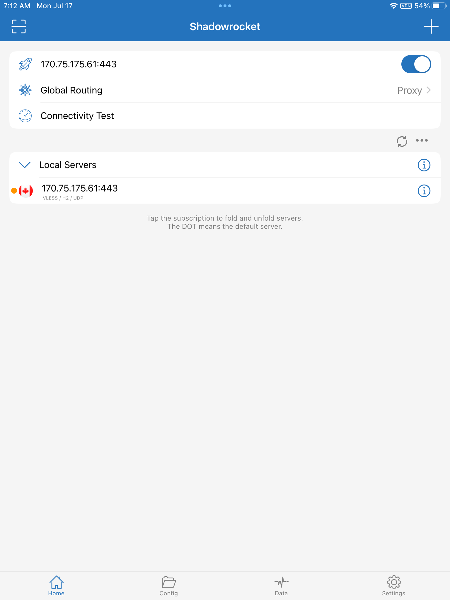

July 18, 2023
Someone asked: "How to make Xray connect to Squid???"
In this configuration, the Xray server does not exit directly to the Internet, but instead passes decrypted traffic to a Squid proxy server.
apt update && apt upgrade -yapt install -y squidDefault /etc/squid/squid.conf:
acl localnet src 0.0.0.1-0.255.255.255 # RFC 1122 "this" network (LAN) acl localnet src 10.0.0.0/8 # RFC 1918 local private network (LAN) acl localnet src 100.64.0.0/10 # RFC 6598 shared address space (CGN) acl localnet src 169.254.0.0/16 # RFC 3927 link-local (directly plugged) machines acl localnet src 172.16.0.0/12 # RFC 1918 local private network (LAN) acl localnet src 192.168.0.0/16 # RFC 1918 local private network (LAN) acl localnet src fc00::/7 # RFC 4193 local private network range acl localnet src fe80::/10 # RFC 4291 link-local (directly plugged) machines acl SSL_ports port 443 acl Safe_ports port 80 # http acl Safe_ports port 21 # ftp acl Safe_ports port 443 # https acl Safe_ports port 70 # gopher acl Safe_ports port 210 # wais acl Safe_ports port 1025-65535 # unregistered ports acl Safe_ports port 280 # http-mgmt acl Safe_ports port 488 # gss-http acl Safe_ports port 591 # filemaker acl Safe_ports port 777 # multiling http http_access deny !Safe_ports http_access deny CONNECT !SSL_ports http_access allow localhost manager http_access deny manager include /etc/squid/conf.d/*.conf http_access allow localhost http_access deny all http_port 3128 coredump_dir /var/spool/squid refresh_pattern ^ftp: 1440 20% 10080 refresh_pattern ^gopher: 1440 0% 1440 refresh_pattern -i (/cgi-bin/|\?) 0 0% 0 refresh_pattern \/(Packages|Sources)(|\.bz2|\.gz|\.xz)$ 0 0% 0 refresh-ims refresh_pattern \/Release(|\.gpg)$ 0 0% 0 refresh-ims refresh_pattern \/InRelease$ 0 0% 0 refresh-ims refresh_pattern \/(Translation-.*)(|\.bz2|\.gz|\.xz)$ 0 0% 0 refresh-ims refresh_pattern . 0 20% 4320
Firewall is closed to the public on port tcp/3128, so only localhost has access to that port.
Install Xray-core on your server using the latest beta, and configure it to run as root:
bash -c "$(curl -L https://github.com/XTLS/Xray-install/raw/main/install-release.sh)" @ install --beta -u rootExample of a completed server configuration file /usr/local/etc/xray/config.json:
{
"log": {
"loglevel": "warning"
},
"routing": {
"domainStrategy": "IPIfNonMatch",
"rules": [
{
"type": "field",
"ip": [
"geoip:cn",
"geoip:private"
],
"outboundTag": "block"
}
]
},
"inbounds": [
{
"listen": "0.0.0.0",
"port": 443,
"protocol": "vless",
"settings": {
"clients": [
{
"id": "3b5390c5-52a2-472d-8dc2-103ef508be6c",
"flow": ""
}
],
"decryption": "none"
},
"streamSettings": {
"network": "h2",
"security": "reality",
"realitySettings": {
"show": false,
"dest": "www.lovelive-anime.jp:443",
"xver": 0,
"serverNames": [
"www.lovelive-anime.jp"
],
"privateKey": "QNraK6EdxPNOzfbL2G1BTl_OeMSxm49H5vps2qzQ3E0",
"shortIds": [
"77c2358dc476ae9e"
]
}
}
}
],
"outbounds": [
{
"protocol": "http",
"tag": "proxy",
"settings": {
"servers": [
{
"address": "127.0.0.1",
"port": 3128
}
]
}
},
{
"protocol": "blackhole",
"tag": "block"
}
]
}
Restart xray systemd service with your final configuration file:
systemctl restart xraysystemctl status xrayThe client does not need to be aware of the Squid proxy. It need only be configured for the Xray proxy. Example of a completed client configuration:
Route all traffic through proxy:
